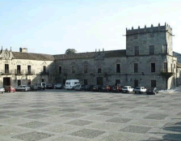

RUMBO AL ALBARIÑO
Cuna de ilustres escritores,
esta bella localidad, a orillas de la ría Arousa, ofrece al
visitante un importante patrimonio arquitectónico, los más frescos
productos de mar y sus afamados albariños, que cada agosto son
homenajeados en la Fiesta del Albariño.

Del importante pasado histórico de la villa
dan fe las abundantes casas nobles que jalonan el centro de
Cambados: Casa dos Faxardo, Santo Tomé do Mar, el pazo de Fefiñanes,
el Pazo de Ulloa del siglo XV o el Parador Nacional de Turismo do
Albariño, donde el primer fin de semana del mes de agosto tiene
lugar la Fiesta del Albariño, declarada de Interés Turístico
Nacional. El Parador está construido sobre las ruinas del Pazo de
Bazán del siglo XVII, perteneciente a un antepasado de la novelista
Emilia Pardo Bazán.
Historia y vino encuentran la perfecta
simbiosis en el impresionante Pazo de Fefiñanes, construido en el
siglo XVI por Juan Sarmiento, cuyo interior alberga hoy una de las
bodegas más antiguas de la zona. Está integrado por dos cuerpos
neoclásicos, con curiosos balcones circulares en su fachada y
escudos renacentistas en sus muros de sillería.
La más alta literatura ha dejado también
aquí su huella de la mano de Valle Inclán, del que se conserva la
casa donde residió, del poeta Ramón Cabanillas, natural de Cambados
donde se encuentra su residencia natal, y de Alvaro Cunqueiro, gran
amante del albariño quien lo definió para la historia como “el
príncipe dorado de los vinos”.
Entre medias de una estupenda comida
gallega a base de mariscos y pescados, nada mejor que coronarla con
un paseo por el ambiente marítimo de Santo Tomé, donde llegaremos a
la Torre de San Sadurniño, del siglo X, vestigio de la defensa de la
zona contra la dominación vikinga. Y para terminar, una ruta por el
Monte Pastora que alberga la Capilla de la Pastora de finales del
siglo XVI, dedicada al Buen Pastor y a la Virgen de las Nieves,
destino todos los veranos de una las romerías más importantes de la
zona. Al final de la ruta, el mirador de la Pastora, situado en el
punto más alto del municipio, ofrece una impresionante vista de la
ría de Arousa.
CARACTERíSTICAS DE LOS ALBARIÑOS
Presentan un color que va del amarillo pálido al amarillo verdoso.
En la nariz desarrollan aromas herbáceos y florales de excelente
intensidad que pueden recordar a la manzana más bien madura, el
albaricoque, el hinojo o la menta. La boca se distingue por su tacto
graso y glicérico, su carácter afrutado y persistencia (en los
mejores ejemplos con buenas dosis de complejidad y elegancia).
RUTA DEL VINO
13 bodegas de la zona están integradas en
la ruta del vino o Ruta do Viño de Cambados. Todas son visitables
previa cita.
ADEGA DURAN. Rúa Pardo Bazán, 1-1º.
Telf.: 986 542 354.
EMILIO PINTOS OUBIÑA. Santo Tomé. Telf: 986
542 435.
FRANCISCO J. VIETES SANTOS. Laxes. Corbillón. Telf.: 986
542 481.
GIL ARMADA. Palacio de Fefiñanes. Telf: 986 524 877.
JOSE Mª DAPORTA LEIRO. Sabugueiro. Telf: 986 543 000.
RAMON
PINTOS VILAS. Cunchal. Telf.: 986 542 188.
PALACIO DE FEFIÑANES.
Pza. de Fefiñanes, s/n. Telf.: 986 542 204.
ADEGAS TERRA SANTA.
Avda. Vilagarcía, 100. Telf.: 986 542 947.
SALNESUR. Bouza, s/n.
Castrelo. Telf.: 986 543 535.
BODEGAS MARTíN CODAX.
Burgans-Vilariño. Telf.: 986 526 040.
VIÑA BLANCA DEL SALNES.
Baltar-Castrelo. Telf.: 986 542 910.
BODEGA VIÑA SOBREIRA. Couto
de Abajo-Castrelo. Telf.: 986 542 002.
BODEGA CASA DA BARCA.
Cobas de Lobos, 104. Vilariño. Telf.: 986 542 570.
DONDE COMER:
María José
San
Gregorio,2 –1º. Tel.: 986 542 281. Cierra domingo noche, lunes
excepto julio y agosto y segunda quincena de octubre. Al frente de
los fogones está Carolina Vila, heredera de una saga familiar, donde
elabora una cocina gallega evolucionada. Menú degustación: 38 €.
Ribadomar
Terra
Santa, 17. Tel.: 986 543 679. Cierra domingo noche y lunes excepto
julio y agosot y del 25 de septiembre al 10 de octubre. Cocina
tradicional con especial cuidado de las materias primas elaborada
por Manuel Ribadomar hijo. Menú 25 €.
DONDE DORMIR:
Parador de Turismo do Albariño***
Pº Calzada, s/n. Tel.: 986 542 250.
cambados@parador.es.
Instalado en el antiguo pazo de Bazás del siglo XVII, rodeado de una
frondosa arboleda y frente al Atlántico. Recientemente restaurado,
es confortable y punto de partida de numerosas excursiones.
Habitación doble: de 95 € a 111 €.
Casa Rosita **
Av. de
Vilagarcía, 8. Corbillón (a 1 km. de Cambados). Tel.: 986 542 878.
Hotel familiar con impresionantes vistas sobre la ría, en un
edificio declarado conjunto histórico-artístico. Restaurante con una
sabrosa comida casera. Piscina. Habitación doble de 41 € a 52 €.
DIRECCIONES ÚTILES:
Oficina de Información: Pza do Concello,
1. Tel.: 986 521 060.
Tienda de vinos y licores: A casa do
Albariño. Pº Calzada, s/n. Vinoteca con numerosos albariños.
|